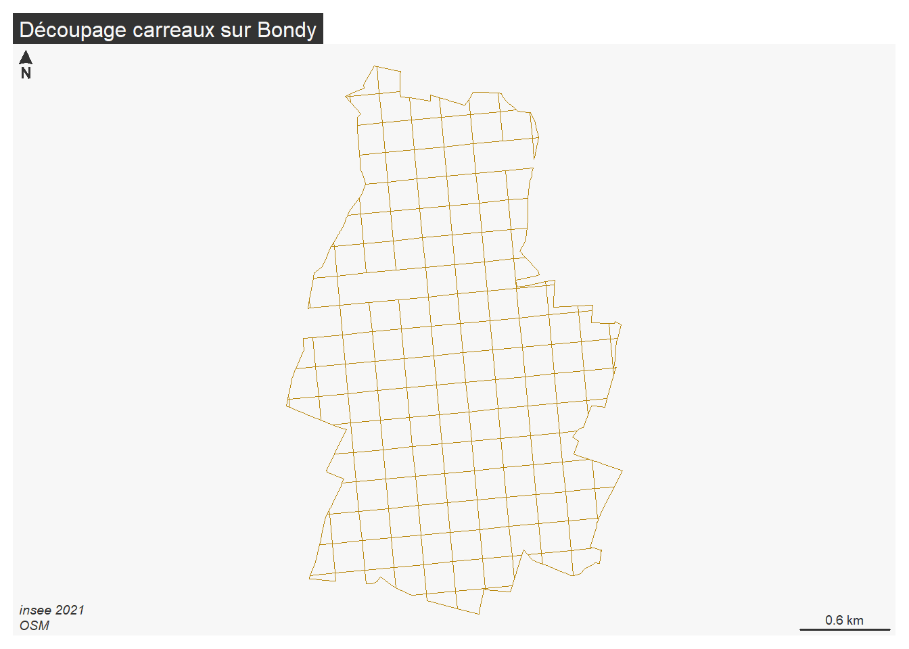
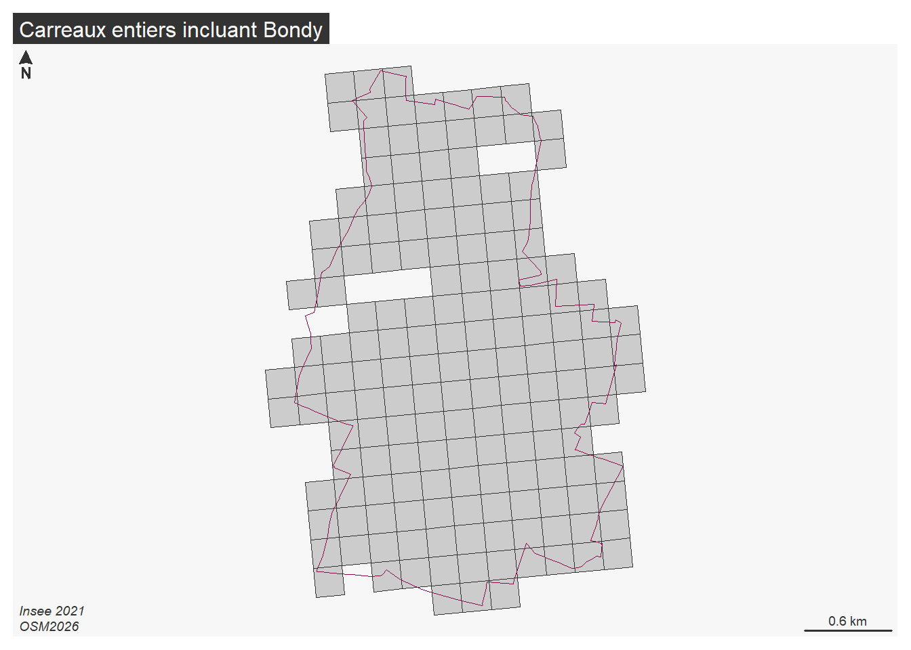

Reading layer `commune' from data source
`C:\Users\tachasa\L6ECSIG\data\bondy.gpkg' using driver `GPKG'
Simple feature collection with 1 feature and 3 fields
Geometry type: MULTIPOLYGON
Dimension: XY
Bounding box: xmin: 661077.2 ymin: 6865340 xmax: 663349.8 ymax: 6869044
Projected CRS: RGF93 v1 / Lambert-93
Code
car <-st_read("data/construction.gpkg", "93")
Reading layer `93' from data source
`C:\Users\tachasa\L6ECSIG\data\construction.gpkg' using driver `GPKG'
Simple feature collection with 4238 features and 35 fields
Geometry type: POLYGON
Dimension: XY
Bounding box: xmin: 647797.6 ymin: 6856393 xmax: 670975.5 ymax: 6876433
Projected CRS: RGF93 v1 / Lambert-93
Code
inter <-st_intersection(car, bondy)st_write(inter, "data/bondy.gpkg", "carreau", delete_layer = T)
Deleting layer `carreau' using driver `GPKG'
Writing layer `carreau' to data source `data/bondy.gpkg' using driver `GPKG'
Writing 164 features with 38 fields and geometry type Unknown (any).
Code
mf_map(inter, col =NA, border ="darkgoldenrod")mf_layout("Découpage carreaux sur Bondy", "insee 2021\nOSM")

zones tampons, enveloppes
Combiner
Intersection
Union, différence
Code
dpt <-st_read("data/dataCours1/communes.shp")
Reading layer `communes' from data source
`C:\Users\tachasa\L6ECSIG\data\dataCours1\communes.shp' using driver `ESRI Shapefile'
Simple feature collection with 39 features and 4 fields
Geometry type: POLYGON
Dimension: XY
Bounding box: xmin: 647882.1 ymin: 6856430 xmax: 670939.7 ymax: 6879246
Projected CRS: RGF93 v1 / Lambert-93
Code
car <-st_read("data/construction.gpkg", "93")
Reading layer `93' from data source
`C:\Users\tachasa\L6ECSIG\data\construction.gpkg' using driver `GPKG'
Simple feature collection with 4238 features and 35 fields
Geometry type: POLYGON
Dimension: XY
Bounding box: xmin: 647797.6 ymin: 6856393 xmax: 670975.5 ymax: 6876433
Projected CRS: RGF93 v1 / Lambert-93
Code
car <- car [grep("93010", car$lcog_geo),]mf_map(car)mf_map(bondy, border ="deeppink4", col =NA, add = T)mf_layout("Carreaux entiers incluant Bondy", "Insee 2021\nOSM2026")

Source Code
---title: "Géotraitements vectoriels"output: html: number_sections: true toc: true---```{r setup, include=FALSE}knitr::opts_chunk$set(echo =TRUE)knitr::opts_chunk$set(cache =FALSE)# Passer la valeur suivante à TRUE pour reproduire les extractions.knitr::opts_chunk$set(eval =TRUE)knitr::opts_chunk$set(warning =FALSE)```# ObjetIl ne s'agit pas ici de dessiner des points / lignes / polygones mais d'agréger / délimiter et combiner des géométries.Ces 3 termes résument tous les outils disponibles dans les logiciels qui apportent de la complexité.Une méthode très utile pour ces opérations, qu'elles soient sur du vecteur ou du raster, est de commencer par faire un shéma de géotraitement.# Schéma de géotraitement# AgrégerAgréger carreaux riches / carreaux pauvres```{r}library(sf)car <-st_read("data/carreauPB.gpkg")``````{r}car <-st_read("data/bondy.gpkg", "carreau")hist(car$men_pauv)summary(car$men_pauv)quantile <-quantile(car$men_pauv)car$men_pauv_rapport <-"moyen"car$men_pauv_rapport [car$men_pauv < quantile [2]] <-"Moins de ménages pauvres"car$men_pauv_rapport [car$men_pauv > quantile [3]] <-"Plus de ménages pauvres"table(car$men_pauv_rapport)rapport <-aggregate(car [, c("men_pauv_rapport")], by =list(car$men_pauv_rapport), length)``````{r}library(mapsf)mf_map(rapport, type ="typo", var ="Group.1", border=NA, leg_title ="")mf_layout("Densité des ménages pauvres", "Insee 2021\nOSM 2026")```# DélimiterSélectionner les carreaux de sa commune dans les carreaux départementaux. Cela va couper les carreaux, comme un pochoir.```{r}library(sf)library(mapsf)bondy <-st_read("data/bondy.gpkg", "commune")car <-st_read("data/construction.gpkg", "93") ``````{r}inter <-st_intersection(car, bondy)st_write(inter, "data/bondy.gpkg", "carreau", delete_layer = T)mf_map(inter, col =NA, border ="darkgoldenrod")mf_layout("Découpage carreaux sur Bondy", "insee 2021\nOSM")```zones tampons, enveloppes# CombinerIntersectionUnion, différence```{r}dpt <-st_read("data/dataCours1/communes.shp")car <-st_read("data/construction.gpkg", "93") car <- car [grep("93010", car$lcog_geo),]mf_map(car)mf_map(bondy, border ="deeppink4", col =NA, add = T)mf_layout("Carreaux entiers incluant Bondy", "Insee 2021\nOSM2026")```